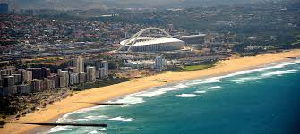
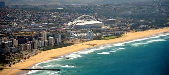

Durban, a coastal city in eastern South Africa’s KwaZulu-Natal province, is known for its African, Indian and colonial influences. Refurbished for soccer’s 2010 World Cup, the seafront promenade runs from uShaka Marine World, a huge theme park with an aquarium, to the futuristic Moses Mabhida Stadium. The Durban Botanical Gardens showcases African plant species
 
